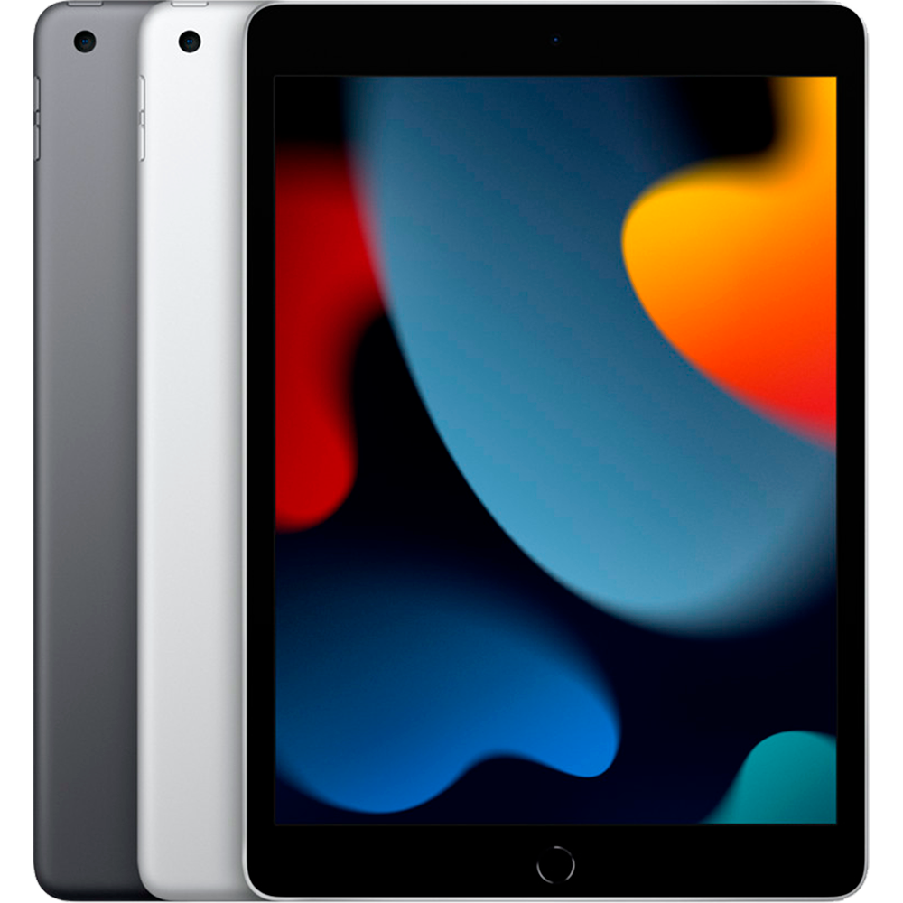

Apple devices
iPhone
iPad
MacBook
AirPors
iPhone — серия смартфонов, разработанных корпорацией Apple.
Работают под управлением операционной системы iOS,
представляющей собой упрощённую и оптимизированную для
функционирования на мобильном устройстве версию macOS.

iPad — планшет, выпускаемый компанией Apple.
Первая версия планшета представлена на презентации
в Сан-Франциско Стивом Джобсом 27 января 2010 года.
Старт продаж начался в Нью-Йорке на Пятой авеню 3 апреля 2010 года.
MacBook — бренд ноутбуков линейки Macintosh на операционной
системе macOS, разработанный корпорацией Apple.
В 2006 году заменил бренды PowerBook и iBook во время
перехода с PowerPC на Intel x86. Текущая линейка состоит
из MacBook Air и MacBook Pro. Ранее выпускались линейки
под названием MacBook: первая версия с 2006 по 2012 год,
вторая — с 2015 по 2019 год.

AirPods — беспроводные Bluetooth наушники от корпорации
Apple. Представляют собой два раздельных наушника (TWS),
использующих жесты для взаимодействия с пользователем:
вынимание наушника из уха приостанавливает воспроизведения
(функция «пауза»); возврат его на место — продолжит
воспроизведение; двойное касание запускает голосового
ассистента Siri, либо управляет воспроизведением музыки.